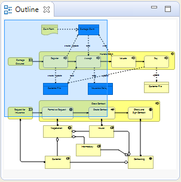

The Outline window acts as a miniature viewport onto the selected diagram View in order to aid in navigation if the diagram is too large to fit in the window.
To open or close the Outline window, choose the option from the main "Window" menu or from the main toolbar.
If the View that is being edited is too large to fit into the application's window then a navigation pane will appear in the Outline window. Dragging this navigation pane will scroll the objects into view in the drawing canvas.
The Outline Window